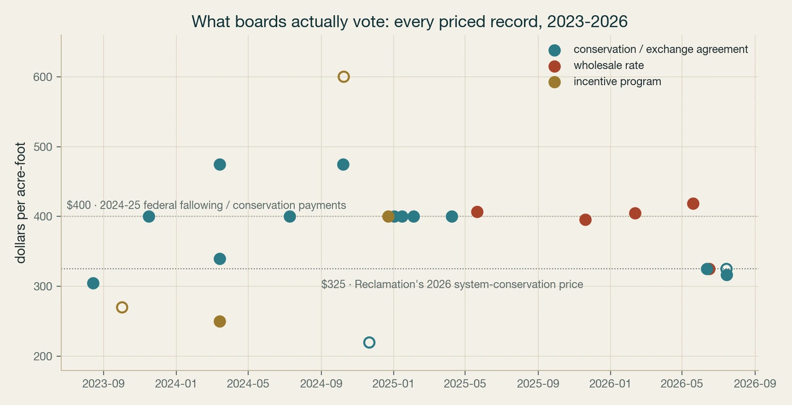

Real transaction prices and formal positions, straight from board packets and USBR scoping letters. Every row links to the primary document and carries a verbatim quote, so you check the source, not us.
Arguments about the Colorado River usually price water with models. Boards price it with votes. We harvested the public board packets of the basin's major water agencies and pulled every record where a real dollar amount meets a real volume of water. 26 priced records so far, 19 with an explicit price per acre-foot in the document and 4 more where the packet states the total and the volume. Four numbers anchor the market:
$325/AFReclamation’s 2026 system-conservation price, appearing independently in MWD, PVID, and SNWA records
$400/AFThe 2023–26 federal price for fallowing and conservation water left in Lake Mead, documented repeatedly in MWD board actions
$250–475/AFMWD’s incentive range for building local supply, recycling, groundwater recovery, and replenishment
$396→419/AFSNWA’s wholesale treated-water charge, up two years running

Click to enlarge| Date | Entity | $/AF | Volume (AF) | Total | What the board did | Doc |
|---|---|---|---|---|---|---|
| 2026-07-15 | Southern Nevada Water Authority | $317 | Ratify interlocal agreement to use SNWA infrastructure to deliver NDOW water; NDOW pays 75% of Wholesale Delivery Charge ($317/AF as of July 1, 2026). | source | ||
| 2026-07-15 | Southern Nevada Water Authority | ≈$325 | 50,000 | $16,250,000 | Board to approve system conservation implementation agreement creating up to 50,000 acre-feet of System Conservation Water in exchange for $16,250,000 in federal funding. | source |
| 2026-06-16 | Palo Verde Irrigation District | $325 | PVID board to discuss Reclamation's offer to extend SCIA Bucket 1 at $325/acre-foot through the 2027-2028 water year. | source | ||
| 2026-06-12 | Metropolitan Water District (SoCal) | $325 | 200,000 | Authorized General Manager to enter SCIA with Reclamation to add up to 200,000 AF to Lake Mead in 2026; Reclamation to compensate Metropolitan for conserved water. | source | |
| 2026-05-20 | Southern Nevada Water Authority | $419 | $6,600,000 | For FY2026-27 SNWA increased the wholesale delivery charge for treated water from $407 to $419 per acre-foot. | source | |
| 2026-02-11 | City of Bullhead City | $405 | Adopted Comprehensive Fee Schedule listing 'All other uses' water charge of $405.00 per acre-foot of estimated annual use. | source | ||
| 2025-11-19 | Southern Nevada Water Authority | $396 | 3,000 | Wholesale Delivery Charge was $396/AF for FY ended June 30, 2025 and $382/AF for FY2024; non-potable charged $300/AF; agreement allows sublease of 3,000 AF per year. | source | |
| 2025-05-21 | Southern Nevada Water Authority | $407 | $9,200,000 | For FY2025-26 SNWA increased the wholesale delivery charge for treated water from $396 to $407 per acre-foot. | source | |
| 2025-04-09 | Metropolitan Water District (SoCal) | $400 | 315,000 | Amendment covering exchange of water 2027-2035; Coachella to pay $400 per AF for exchange with options to pre-deliver up to 200,000 AF and deliver 315,000 AF by 2035. | source | |
| 2025-02-03 | Metropolitan Water District (SoCal) | $400 | 35,000 | Authorize General Manager to forbear water conserved by two CVWD projects so conserved water can be added to Lake Mead under Reclamation’s LC Conservation Program. | source | |
| 2025-01-15 | Metropolitan Water District (SoCal) | $400 | 5,700 | Authorize expansion of Bard Seasonal Fallowing Program to 6,000 acres and amend SCIA; Reclamation to pay $400/AF for conserved CR water left in Lake Mead. | source | |
| 2025-01-02 | Metropolitan Water District (SoCal) | $400 | 351,000 | Authorize agreement with Palo Verde Irrigation District; extend PVID fallowing program and receive USBR LC Conservation funding for system conservation water. | source | |
| 2024-12-23 | Metropolitan Water District (SoCal) | $400 | Presentation recommending extension of PVID voluntary five-month fallowing with federal funding to add conserved water to Lake Mead; federal funding at $400/AF. | source | ||
| 2024-12-06 | Metropolitan Water District (SoCal) | 4,000 | $8,000,000 | Authorize GM to enter into funding agreement with U.S. Bureau of Reclamation under the Lower Colorado Conservation and Efficiency Program to implement phase two DAC Leak Detection and Repair, receiving federal funding and creating conserved water. | source | |
| 2024-11-21 | Metropolitan Water District (SoCal) | ≈$220 | 265,296 | $58,300,000 | Authorize GM to enter into agreements with U.S. Bureau of Reclamation for phase two of the Lower Colorado Conservation Program to implement AVEK HDWB and Turf Replacement, yielding long-term conserved water for Lake Mead. | source |
| 2024-10-09 | Metropolitan Water District (SoCal) | ≈$600 | 100,000 | $60,000,000 | Authorize GM to enter into Reverse-Cyclic Program agreements to defer deliveries of up to 50,000 AF in 2024 and up to 50,000 AF in 2025, generating new revenues to help achieve $60 million in one-time revenues. | source |
| 2024-10-08 | Los Angeles Department of Water and Power | $475 | $139,350,750 | LADWP to enter Agreement No. AO-5302 with MWD for Local Resources Program participation, providing up to $139,350,750; MWD funds $475/AF for first 15 years to recharge San Fernando Basin. | source | |
| 2024-08-16 | Metropolitan Water District (SoCal) | 52,800 | $500,000 | Proposed one-time option payments to secure first right of refusal for water transfers from Western Canal WD and Richvale ID for 2025-2027; $250,000 each; transfer prices $965/AF (<=20% SWP) and $600/AF (>20%). | source | |
| 2024-07-10 | Metropolitan Water District (SoCal) | $400 | 35,000 | Metropolitan seeks forbearance to allow Reclamation-CVWD agreements funding reduced groundwater replenishment up to 35,000 AF/year and agricultural conservation 2024-2026 at $400/AF; includes related IID/SDCWA provisions up to 100,000 AF/year. | source | |
| 2024-03-14 | Metropolitan Water District (SoCal) | $340 | 5,000 | Authorize General Manager to enter Local Resources Program Agreement with Las Virgenes MWD and JPA for PURE Water Project for up to 5,000 AFY; fixed incentive up to $340/AF over 25 years. | source | |
| 2024-03-14 | Metropolitan Water District (SoCal) | $250 | 363,000 | $244,000,000 | Local Resources Program offers incentives of up to $250/AF to expand water recycling and groundwater recovery; 86 projects expected to produce about 363,000 AFY; MWD has provided over $244 million historically. | source |
| 2024-03-14 | Metropolitan Water District (SoCal) | $475 | 19,500 | $138,937,500 | Authorize GM to enter LRP Agreement with LADWP for Los Angeles Groundwater Replenishment Project for up to 19,500 AFY; Metropolitan's maximum obligation up to $138,937,500 at $475/AF over 15 years. | source |
| 2024-02-01 | Metropolitan Water District (SoCal) | 16,223 | $50,000,000 | Authorize GM to secure one-year water transfers and exchanges with various districts for up to $50 million; cites prior 2022 purchases of 16,223 AF at $800/AF and 3,825 AF at $447/AF. | source | |
| 2023-11-16 | Metropolitan Water District (SoCal) | $400 | 351,000 | Agreements to conserve 351,000 AF of Colorado River system water through fallowing 2023-2026; Reclamation to pay Metropolitan $400/AF for conserved water left in Lake Mead; payments shared with Palo Verde community. | source | |
| 2023-10-02 | Metropolitan Water District (SoCal) | ≈$270 | 3,200 | $864,000 | Extend the Metropolitan/Quechan Tribe Seasonal Fallowing Pilot to incentivize fallowing up to $864,000 in 2024, paying $530.61 per irrigable acre; estimated savings ~2 AF per acre, up to 1,600 acres. | source |
| 2023-08-14 | Metropolitan Water District (SoCal) | $305 | 140 | Authorize GM to enter LRP Agreement with Eastern Municipal Water District for French Valley Recycled Water Distribution Project: 25-year term, 140 AFY contract yield, fixed incentive up to $305/AF over 25 years. | source |
≈ means the unit price is derived from the document’s stated total divided by its stated volume, not quoted as a $/AF figure. Full CSV with verbatim quotes: price_observatory.csv.
The rules that run the river expire at the end of 2026, and the negotiation over what replaces them is happening in public, in scoping letters to Reclamation and in board resolutions. We compiled the documented positions: 567 dated entries, including 412 formal letters from 265 organizations on USBR’s post-2026 and related processes, 148 board-adopted stances from agency packets, and 7 federal docket comments. 55 of the 311 stakeholders on our stakeholder map now have at least one documented position on the record.
Below are the entries that matter most, the states and compact commissions, the biggest districts and utilities, the tribes, and the major conservation groups, newest first. The full ledger is in the repo: stance_ledger.csv and usbr_letters.csv.
| Date | Who | Position, with a verbatim line | Doc |
|---|---|---|---|
| 2026-07-15 | Southern Nevada Water Authority board agreement | Ratify interlocal agreement to use SNWA infrastructure to deliver NDOW water; NDOW pays 75% of Wholesale Delivery Charge ($317/AF as of July 1, 2026).“NDOW will pay 75 percent of the Wholesale Delivery Charge, which will be $317 per acre-foot as of July 1, 2026” | source |
| 2026-07-15 | Southern Nevada Water Authority board agreement | Board to approve system conservation implementation agreement creating up to 50,000 acre-feet of System Conservation Water in exchange for $16,250,000 in federal funding.“create up to 50,000 acre-feet of System Conservation Water in exchange for $16,250,000 in federal funding” | source |
| 2026-06-12 | The Metropolitan Water District of Southern California board agreement | Authorized General Manager to enter SCIA with Reclamation to add up to 200,000 AF to Lake Mead in 2026; Reclamation to compensate Metropolitan for conserved water.“add up to 200,000 acre-feet (AF) of Colorado River system water to Lake Mead in 2026. Metropolitan would be compensated at $325 per AF” | source |
| 2026-06-12 | The Metropolitan Water District of Southern California board agreement | Authorize the General Manager to enter into an agreement with the U.S. Bureau of Reclamation to add water to Lake Mead conserved under Metropolitan’s Intentionally Created Surplus Exhibit.“enter into (1) an agreement with the U.S. Bureau of Reclamation to add water to Lake Mead conserved under Metropolitan’s existing Intentionally Created Surplus Exhibit” | source |
| 2026-06-08 | The Metropolitan Water District of Southern California board agreement | Authorize GM to execute one-year amendment to funding agreement supporting Colorado River Board, Six Agency Committee, and CR JPA; authorize payment of Metropolitan’s share up to $1,022,720 for FY 2026/27.“authorize payment of Metropolitan’s share up to $1,022,720.00 for fiscal year 2026/27” | source |
| 2026-06-03 | Palo Verde Irrigation District board agreement | Board to discuss and/or approve a Voluntary Supplemental Fallowing Agreement covering August 1, 2026 to December 31, 2026.“Discuss and/or approve Voluntary Supplemental Fallowing Agreement from August 1, 2026 to December 31, 2026” | source |
| 2026-05-20 | Southern Nevada Water Authority board agreement | Approve agreement assigning a portion of Titanium Metals Corporation's Colorado River water rights to the Authority and setting framework for permanent water service to Titanium Metals within Black Mountain Industrial Complex.“Approve and authorize the General Manager to sign... an agreement... addressing the assignment of a portion of Titanium Metals Corporation’s Colorado River water…” | source |
| 2026-04-21 | Palo Verde Irrigation District board program | PVID to discuss a Bureau of Reclamation letter regarding Water Conservation Programs for the 2027-2028 water years.“Discuss letter received from the Bureau of Reclamation regarding Water Conservation Programs for the 2027-2028 water years” | source |
| 2026-04-02 | Central Arizona Project board agreement | Board considered ratifying approval of an Urgent Necessity Contract for Pool 1 embankment and canal repair and received reports on Colorado River conditions and discussions.“Discussion and Consideration of Action to Ratify Approval of Urgent Necessity Contract for Pool 1 Embankment and Canal Repair (Project Reliability^)” | source |
| 2026-03-17 | Palo Verde Irrigation District board agreement | PVID to review and/or approve the 2026 California Forbearance Agreement.“Review and/or approve 2026 California Forbearance Agreement” | source |
| 2025-12-04 | Central Arizona Project board agreement | Board reviewed the 2026 Annual Operating Plan, 2025 water operations, and considered approving an amendment to the agreement with Reclamation regarding the 242 Wellfield and Pipeline Conservation Project.“Discussion and Consideration of Action to Approve an Amendment to the Agreement between CAWCD and the Bureau of Reclamation regarding the 242 Wellfield and Pipeline…” | source |
| 2025-11-06 | Central Arizona Project board resolution | Board considered approving a Board Policy to establish a System Improvement Fee for CAWCD wheeling contracts and received reports on Colorado River conditions and related agreements.“Discussion and Consideration of Action to Approve a Board Policy to Establish a System Improvement Fee for CAWCD Wheeling Contracts (Water Supply^)” | source |
| 2025-01-08 | Coachella Valley Water District board vote | Board approved appointments to committees including Recycled Water Committee: Matt Roberts & Casey Balch with alternates Case Van Wingerden & Patrick O’Connor.“Recycled Water Committee Matt Roberts & Casey Balch Alternates: Case Van Wingerden & Patrick O’Connor” | source |
| 2024-12-11 | Coachella Valley Water District board vote | Board engaged FM3 Research to conduct customer polling; motion carried by a 5-0 vote (minutes of Dec 11, 2024).“Engage FM3 Research to conduct customer polling. The motion carried by a 5-0 vote.” | source |
| 2024-11-13 | Coachella Valley Water District board vote | Board approved the CAPP EIR Addendum by motion (motion carried 5-0) as presented by WSC (minutes of Nov 13, 2024).“Director Holcombe moved, and Director Balch seconded the motion approving the CAPP EIR Addendum. The motion carried by a 5-0 vote.” | source |
| 2024-11-07 | COLORADO RIVER INDIAN TRIBES USBR letter | Requests inclusion of CRIT's proposed alternative in the Post-2026 NEPA process; opposes any involuntary reallocation of the Tribe's senior water rights without CRIT consent; demands Reclamation justify authority to assess system losses and fix…“Such reallocation of water from the CRIT to Junior priority users violates the injunctive order of the Supreme Court provided in the Consolidated Decree” | source |
| 2024-05-16 | Southern Ute Indian Tribe, Paiute Indian Tribe of Utah, Salt River Pima-Maricopa Indian Community, Ute Mountain Ute Tribe, Tonto Apache Tribe, Fort Yuma Quechan Indian Tribe, Pueblo of Zuni Tribe, Gila River Indian Community, Yavapai-Apache Nation, Ak Chin Indian Community, Ute Indian Tribe, Jicarilla Apache Nation, Yavapai-Prescott Indian Tribe, Hualapai Tribe, Las Vegas Tribe of Paiute, San Juan Southern Paiute Tribe, San Carlos Apache Tribe, Chemehuevi Tribe, White Mountain Apache Tribe, Pasqua Yaqui Tribe USBR letter | Tribes demand the United States and Reclamation actively protect Tribal water rights, reject involuntary or uncompensated out-of-priority cuts and development caps, secure equivalent alternative supplies and funding, fully analyze and mitigate impacts,…“To meet its trust responsibility to Basin Tribes, the United States must take actions to actively protect Tribal water rights” | source |
| 2024-03-29 | Gila River Indian Community USBR letter | Requests Reclamation model the Community Alternative: middle-ground assumptions that more fairly share cuts, protect tribal water settlements, and ensure mitigation/replacement for tribal losses; opposes the Upper Basin and the Lower Basin alternatives as…“The LB Altemative places too much of its proposed Initial Reduction Zone and Static Reduction Zone reduction volumes on Arizona, with a maximum of 760,000 acre-feet…” | source |
| 2024-03-29 | National Audubon Society, Western Resource Advocates, Theodore Roosevelt Conservation Partnership, American Rivers, The Nature Conservancy, Environmental Defense Fund, Trout Unlimited USBR letter | Conservation NGOs ask Reclamation to include their 'Cooperative Conservation Alternative' in the post-2026 EIS and to evaluate tools such as Dual Indicator operations, stewardship/mitigation targets, and a Conservation Reserve to stabilize…“We urge Reclamation to incorporate this Alternative into the NEPA process, evaluating its impact and feasibility alongside other alternatives.” | source |
| 2024-03-28 | Upper Division States of Colorado, New Mexico, Utah, and Wyoming, Upper Colorado River Commission (UCRC) USBR letter | Acknowledges completion of 2023 DROA releases, expresses appreciation for Reclamation's collaboration, and states readiness to continue working with Reclamation and to proceed with any 2024 DROA plan in accordance with DROA and the UCRC's…“The Upper Division States and the UCRC stand ready to continue working with Reclamation consistent with DROA.” | source |
| 2024-03-06 | The Colorado River Basin States Representatives of Arizona, California, and Nevada USBR letter | Submits the Lower Basin Alternative for NEPA analysis and requests adoption: implement a static 1.5 maf reduction to Lower Basin apportionments and deliveries to Mexico, operate based on total system contents, share reductions broadly (including Upper…“This Alternative includes reductions from Lower Basin state apportionments and deliveries to Mexico by 1.5 million acre-feet (maf) (static reduction) under most…” | source |
| 2023-12-20 | Grand Canyon Trust USBR letter | Calls on Reclamation to analyze tradeoffs of demand reductions, prepare vulnerability assessments, and prioritize conservation and demand reduction to protect communities, cultures, environments, and public health.“Grand Canyon Trust’s Scoping Comments on the SEIS for Near-Term Operations of Lake Powell and Lake Mead dated December 20, 2023 at 11-12. These comments are…” | source |
| 2023-12-11 | The Colorado River Basin States Representatives of Arizona, California, and Nevada (collectively, the Lower Division States) USBR letter | Supports the No Action Alternative and the Lower Division States' Proposed Alternative; opposes inclusion of elements from Alternatives 1 and 2 in the final SEIS and requests the final SEIS clarify those elements will not be included; urges focus on…“The final SEIS should clarify that elements of Alternatives 1 and 2 will not be included in the preferred alternative.” | source |
| 2023-12-11 | States of Colorado, New Mexico, Utah, and Wyoming (Upper Division States), Upper Colorado River Commission (UCRC) USBR letter | Requests Reclamation make Lower Basin reductions mandatory and enforceable (3.0 maf by 2026) as wet‑water, verifiable conservation (not ICS conversion), reinstate First Draft operational tiers to better protect Lake Powell, and improve accounting…“Reclamation must ensure that the SEIS conservation is mandatory and enforceable, as represented in the Lower Division Proposal, so that the Proposed Action…” | source |
| 2023-12-11 | COLORADO RIVER COMMISSION OF NEVADA USBR letter | Supports Reclamation's proposed alternative (Lower Basin Proposal) and near-term actions; requests reservoir protection elevations (Lake Mead 1,000' and Lake Powell 3,500'); objects to incorporating parts of eliminated Alternatives without…“The CRCNV supports the proposed alternative's near-term actions that will reduce the risks to the Colorado River Basin.” | source |
| 2023-12-11 | Imperial Irrigation District USBR letter | Supports Reclamation’s Revised DSEIS and adoption of the Lower Division Proposal (Proposed Action); opposes Action Alternative 2 as legally infeasible and requests deletion/clarification limiting Reclamation to actions authorized under the Law of the River.“IID supports the Lower Division Proposal, the Proposed Action analyzed in the Revised DSEIS” | source |
| 2023-12-11 | Salt River Project, Salt River Valley Water Users' Association, Salt River Project Agricultural Improvement and Power District USBR letter | SRP supports the Revised Draft SEIS Proposed Action (Section 2.7), commends voluntary conservation and federal funding, opposes mandatory reductions beyond existing guidelines, and requests analysis of cumulative hydropower impacts (including LTEMP) and…“SRP supports the Proposed Action alternative outlined in Section 2.7 of the Revised Draft SEIS” | source |
| 2023-12-11 | Front Range Water Council (Denver Water, Northern Water, Pueblo Water, Aurora Water, Colorado Springs Utilities, the Southeastern Colorado Water Conservancy District, Twin Lakes Reservoir and Canal Company) USBR letter | Supports the proposed action's purpose and hydrology assumptions but requests additional safeguards to protect Lake Powell (including allowing releases below 6.0 MAF to maintain 3,500 ft), inclusion/reanalysis of Alternatives 1 and 2 with additional…“Reclamation should begin to account for system losses within the Lower Basin” | source |
| 2023-12-11 | Colorado River Water Conservation District (Colorado River District) USBR letter | Requests Lower Basin reductions be mandatory, enforceable, measurable, verifiable, and non-retrievable, distinct from ICS and prior pledges; urges retaining original DSEIS operational tiers, including 6.0 MAF releases when Lake Powell ≤ 3,575', and…“The Colorado River District believes that operational approach from the original DSEIS should remain in the SEIS, so that when Lake Powell is at or below elevation…” | source |
| 2023-12-11 | GILA RIVER INDIAN COMMUNITY USBR letter | Requests any reductions to Tribal statutory water entitlements be voluntary and compensated or replaced; urges Reclamation to revise SEIS to recognize CAP Tribal entitlements as Indian Trust Assets (revise Section 3.18); wait for Q1 2024 runoff data;…“Regardless of which Alternative Reclamation ultimately adopts, Reclamation should ensure any and all reductions to Tribal statutory water entitlements are voluntary…” | source |
| 2023-12-11 | COLORADO RIVER INDIAN TRIBES USBR letter | Requests Reclamation explicitly acknowledge Alternative 2 is unlawful under the Arizona v. California Decree and NEPA, clarify it lacks authority to reduce CRIT deliveries, analyze environmental impacts of Lower Division Proposal conservation measures, and…“Alternative 2 would have constituted an illegal taking of CRIT's property in violation of the 5th Amendment to the Constitution and a breach of…” | source |
| 2023-12-11 | The Jicarilla Apache Nation USBR letter | Requests stronger protections for Lake Powell: lower Powell tiers, limit annual releases, eliminate balancing at certain elevations, require fully executed binding conservation contracts, apportion evaporation and transit losses to the Lower Basin, and…“Specifically, Powell tiers should be adjusted downward, annual releases from Powell should be limited, balancing should be eliminated at certain elevations, and…” | source |
| 2023-12-11 | QUECHAN INDIAN TRIBE USBR letter | Supports adoption of the revised draft SEIS proposed action as the preferred alternative; commits over 20% of its California water rights to system conservation; requests Reclamation acknowledge it lacks legal authority to impose out-of-priority cuts on…“We strongly support the adoption of the revised draft SEIS' proposed action alternative as the preferred alternative in your final SEIS.” | source |
| 2023-12-11 | Grand Canyon Trust USBR letter | Grand Canyon Trust urges Reclamation to comply with NEPA by fully analyzing additional alternatives (including Alternatives 1 and 2), expand the Revised Draft SEIS, and adopt additional short-term conservation beyond the proposed action to stabilize…“Reclamation should either fully analyze Alternatives 1 and 2 in the Revised Draft SEIS including the full range of its environmental consequences” | source |
| 2023-12-06 | Southern Ute Indian Tribe USBR letter | Supports the Proposed Action, including 3 million-acre-feet conservation (minimum 1.5 maf by 2024) and authorization to reduce releases to 6 maf if Lake Powell drops below 3,500 ft; opposes the No Action alternative and urges selection of the Proposed Action.“Southern Ute supports the selection of the Proposed Action set forth in the Revised DSEIS.” | source |
| 2023-08-15 | Colorado River Basin States Representatives of Arizona, California, Colorado, Nevada, New Mexico, Utah, and Wyoming USBR letter | Basin States request the Secretary consult and collaborate with Governors’ Representatives from each Basin State in developing Post-2026 EIS alternatives; emphasize need for Basin States' participation and collaboration with Tribes, stakeholders, and…“the Secretary of the Interior (“Secretary”) must consult with the Governors’ Representatives from each Basin State and collaborate on the development of alternatives…” | source |
| 2023-08-15 | UPPER COLORADO RIVER COMMISSION USBR letter | Supports development of new Post-2026 operational guidelines for Lakes Powell and Mead; urges inclusion of Basin States, protection of Upper Basin rights, durable mechanisms to protect and rebuild storage, and actions to address supply-demand imbalance…“The Upper Division States support the development of new operational guidelines and strategies for Lake Powell and Lake Mead (“Post-2026 Operations”) to replace the…” | source |
| 2023-08-15 | ARIZONA DEPARTMENT of WATERRESOURCES USBR letter | Seeks equitable sharing of Colorado River system protection burdens, evaluation of voluntary storage (ICS) with an Arizona implementation framework including Tribes, and updated beneficial use/efficiency standards for contractors in both Upper and Lower…“the burdens associated with protecting the Colorado River System should not fall disproportionately on any particular state, sector, or water user.” | source |
| 2023-08-15 | State Engineer’s Office USBR letter | Urges Post-2026 Operations to balance consumptive uses with available supply, protect storage and higher elevations at Lakes Powell and Mead, ensure consistency with the Law of the River, enhance basin-wide predictability and cooperation, and avoid…“Post-2026 Operations must seek full utilization of storage in Lakes Powell and Mead.” | source |
| 2023-08-15 | COLORADO RIVER COMMISSION OF NEVADA USBR letter | Requests Reclamation protect Nevada’s 300,000 acre-feet allocation and Southern Nevada’s water supply as it develops Post-2026 operations, and submits comments for the EIS.“The CRCNV is the state agency responsible for protecting Nevada’s annual 300,000 acre-feet allocation from the Colorado River.” | source |
| 2023-08-15 | STATE OF CALIFORNIA - CALIFORNIA NATURAL RESOURCES AGENCY GAVIN NEWSOM, Governor DEPARTMENT OF WATER RESOURCES USBR letter | Requests shorter guideline terms or stronger re-opener provisions, improved forecasting and modeling, evaluation of Reclamation authorities (e.g., voluntary water banks), expanded access to federal storage, and federal commitment to modernize…“We recommend that Reclamation fully evaluate its authorities to employ techniques it has used elsewhere (e.g., the Klamath Project) to help users manage shortages,…” | source |
| 2023-08-15 | STATE OF NEW MEXICO USBR letter | Requests a narrow EIS scope limited to coordinated operations of Lakes Powell and Mead; recommends using lessons from 2007 Guidelines, accounting for evaporation and system losses, planning for varied hydrology, ensuring flexibility, periodic review, best…“"The scope of the EIS should be limited to the coordinated operations of Lake Powell and Lake Mead."” | source |
| 2023-08-15 | Imperial Irrigation District USBR letter | Requests Reclamation's EIS comply with the Law of the River, use best available science and forecasting, employ appropriate geographic/temporal scope, and evaluate diverse realistic alternatives; emphasizes IID's senior water rights and reliance…“Under the Law of the River, IID has a senior entitlement to Colorado River water pursuant to a permanent 1932 contract with the Secretary of the Interior.” | source |
| 2023-08-15 | Salt River Valley Water User’s Association (“Association”) and the Salt River Project Agricultural Improvement and Power District (“District”; collectively the Salt River Project “SRP”) USBR letter | Support building on the Law of the River; oppose wholesale legal revision. Request earlier, more aggressive shortage triggers, equitable allocation of reductions (including ESL), consideration of hydropower impacts, and proactive measures to protect Lakes…“SRP does not support wholesale revision to the foundational legal framework.” | source |
| 2023-08-15 | COLORADO RIVER DISTRICT USBR letter | Urges bold, meaningful post-2026 changes consistent with the Law of the River: make operations hydrology-driven, adopt depletion accounting in the Lower Basin, plan for a wide range of hydrologic futures, eliminate gameable tiers, and limit guidelines to…“Hydrology, not reservoir levels, must drive post 2026 operations.” | source |
| 2023-08-15 | The Navajo Nation USBR letter | Asks for active, meaningful engagement with the Navajo Nation in Post-2026 operations, adequate accounting of impacts, support for development and accounting of unquantified/undeveloped Navajo water rights, and consideration of impacts to energy, water…“It is c riti cal for the avajo Nation to continu e to deve lop its water righ ts.” | source |
| 2023-08-15 | COLORADO RIVER INDIAN TRIBES USBR letter | Requests the DEIS protect CRIT's present perfected water rights, ensure ability to fully use its allocation, exclude uncompensated reallocations, include CRIT in conservation programs, analyze impacts (economic, cultural, environmental), disclose MSCP…“we will oppose any alternative in the post-2026 NEPA process that seeks to involuntarily reallocate the CRIT's water rights with or without just compensation.” | source |
| 2020-11-16 | Colorado River Board of California USBR letter | Supports the draft overall but requests clarifications and additions: highlight conserved Lower Basin water stored in Lake Mead; include Upper Basin demands and Mexico delivery; clarify Glen Canyon Dam release/powerplant limits; correct Lower Basin…“The Board suggests incorporating these examples into the narrative discussion of the effectiveness in Section 8.” | source |
| 2020-11-16 | Colorado River Commission of Nevada (CRC) USBR letter | CRC supports Reclamation's evaluation and conclusions on the 2007 Guidelines and the 7D review scope; endorses stakeholder engagement. Requests Section 6 be placed in an appendix, more detailed resource analyses in future studies/renegotiations, and…“The CRC agrees with Reclamation on the scope of the 7D review. Evaluating the purpose and theme provides sufficient evidence of the success of the Guidelines.” | source |
| 2020-11-13 | Arizona Department of Water Resources USBR letter | Requests Reclamation revise the draft 7D by moving out-of-scope sections to appendices, add discussion of the Lake Powell Equalization Elevation Table and Upper Basin impacts, expand and acknowledge Arizona ICS agreements, clarify the May provision, and…“In this effort, the Department asks that Reclamation consider and incorporate the above comments.” | source |
| 2020-11-13 | Wyoming State Engineer's Office USBR letter | Wyoming asks Reclamation to ensure the final report recognizes and protects Upper Basin interests, maintaining coordinated operations that avoid Upper Basin curtailment, limits additional Lower Basin flexibilities that could increase risk, and better…“The draft report primarily focuses on the Lower Basin, not on the protection afforded to the Upper Basin by storage in Lake Powell.” | source |
| 2020-11-13 | NEW MEXICO INTERSTATE STREAM COMMISSION USBR letter | Requests Reclamation include an Upper Basin perspective, perform a comparison of system performance under the Interim Guidelines versus pre-2007 operations (storage, water supply, power), and involve New Mexico in future discussions; emphasizes the review…“New Mexico still believes in the need for a comparison between how the system performed under the Interim Guidelines with how the system would have performed under…” | source |
| 2020-11-13 | State of Utah, Department of Natural Resources, Division of Water Resources USBR letter | Requests stronger evaluation of impacts on the Upper Basin and Lake Powell, including assessing reduced water available for Upper Basin development, applying 2008-2019 hydrology to the 2007 model for comparison, clarifying figures, and continued state…“We recommend that actual 2008 to 2019 hydrology be applied to the 2007 version of the Colorado River System Simulation and compared with observed results.” | source |
| 2020-11-13 | Imperial Irrigation District USBR letter | IID asks Reclamation to recognize QSA/CRWDA contributions, correct Draft Report inaccuracies, include IID in DCP discussions, better engage agricultural districts, and expand ICS flexibility and authorized conservation measures to increase system…“IID considers the ICS element one of the most beneficial aspects of the 2007 Guidelines, but as originally constructed, it has also been a limiting factor and served…” | source |
| 2020-11-10 | Colorado River Board of California USBR letter | Requests revisions to Reclamation’s 7D Effectiveness Review: add and highlight examples of the Guidelines’ effectiveness (e.g., ~3.2 MAF conserved), clarify inclusion of Upper Basin demands and Mexico deliveries, correct Lower Basin use figures,…“The Board recommends adding specific examples of the effectiveness from Section 7 of the draft report to strengthen the case being made in Section 8.” | source |
Coverage is honest, not complete: Imperial Irrigation District and Salt River Project block automated access to their packets, so they appear here only through their USBR letters. Positions are AI-extracted from the linked documents and spot-checked. Read the source before you quote anyone.
{kind=link}